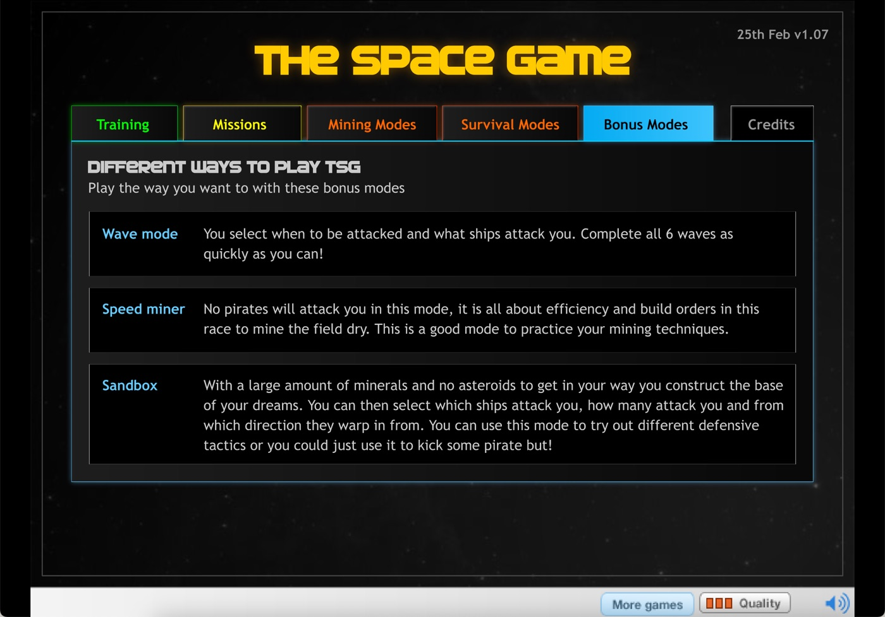
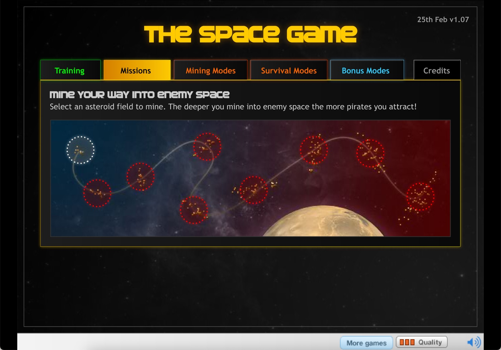
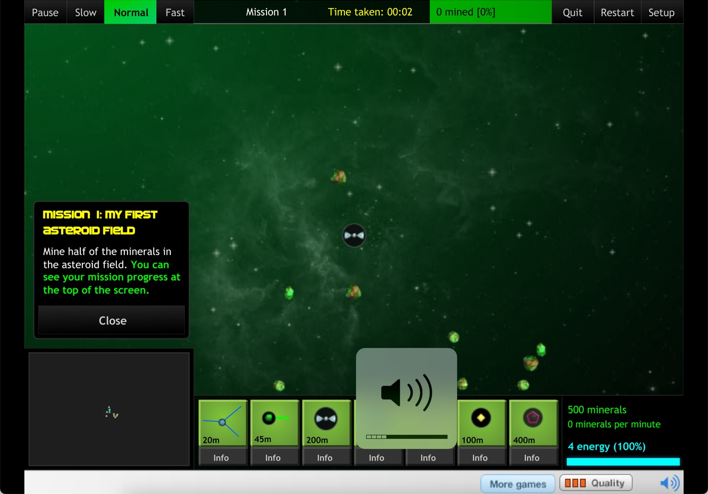
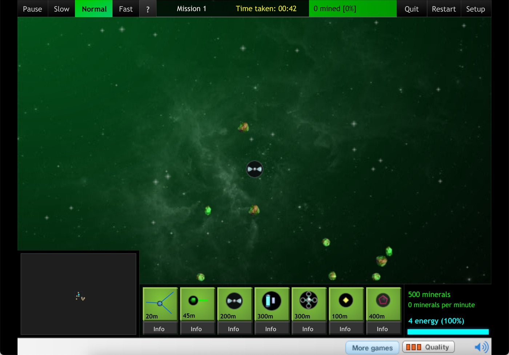
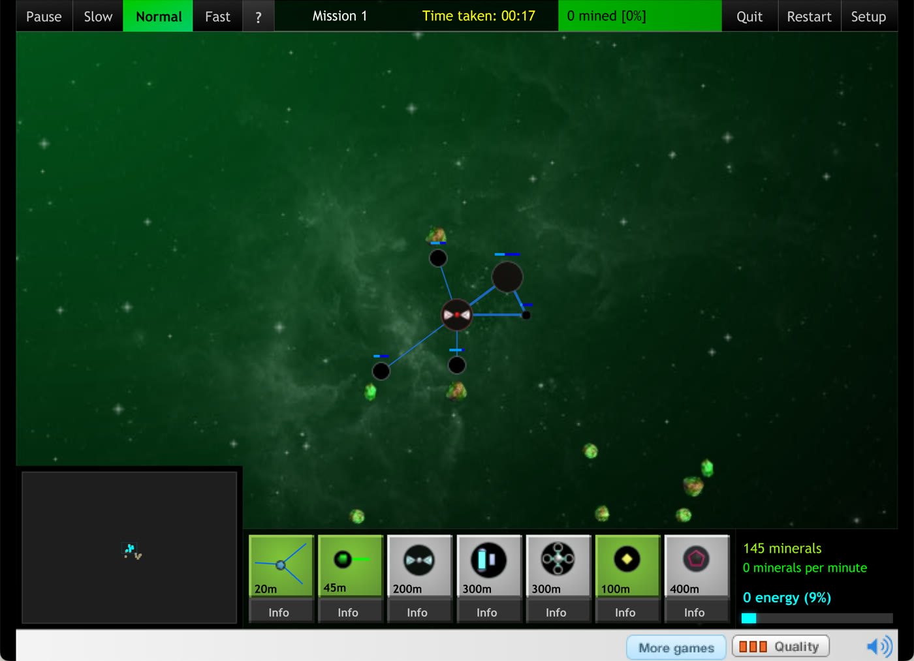
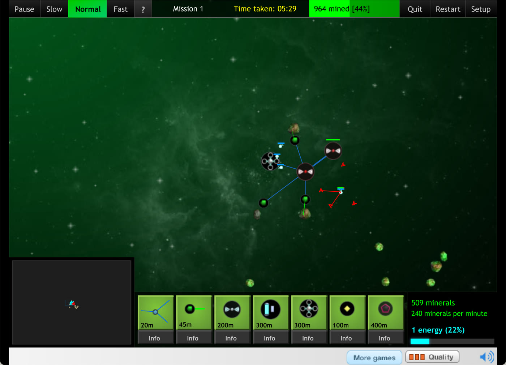
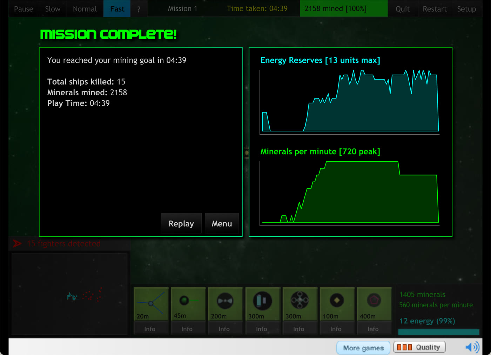
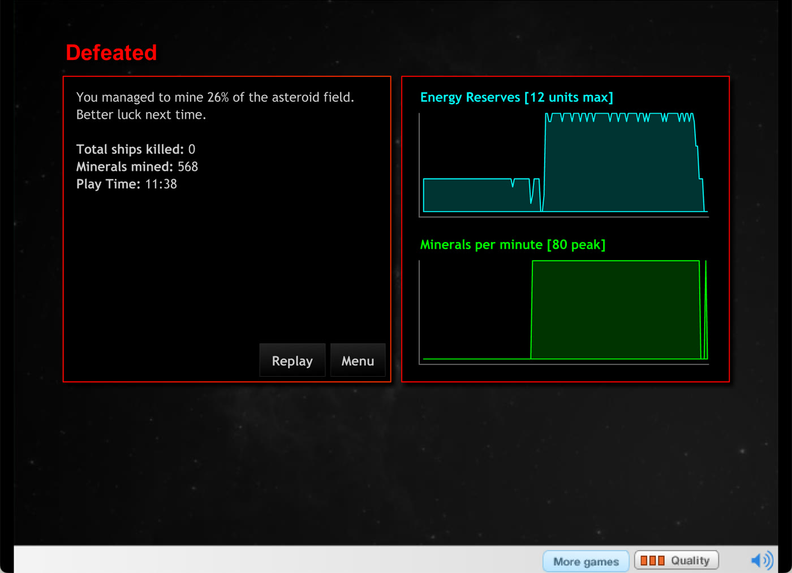
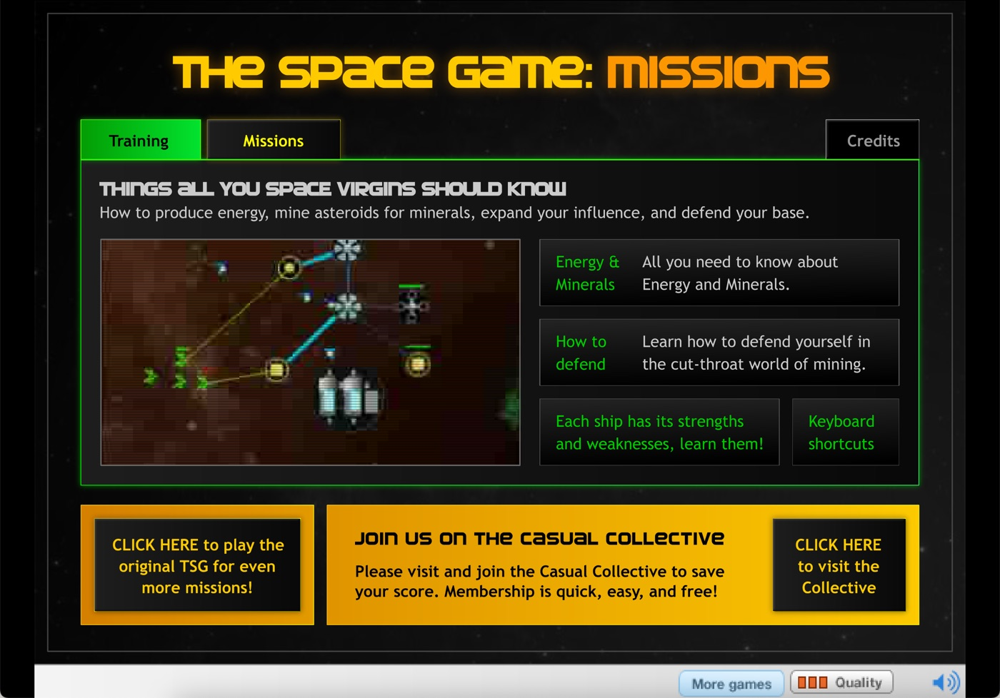
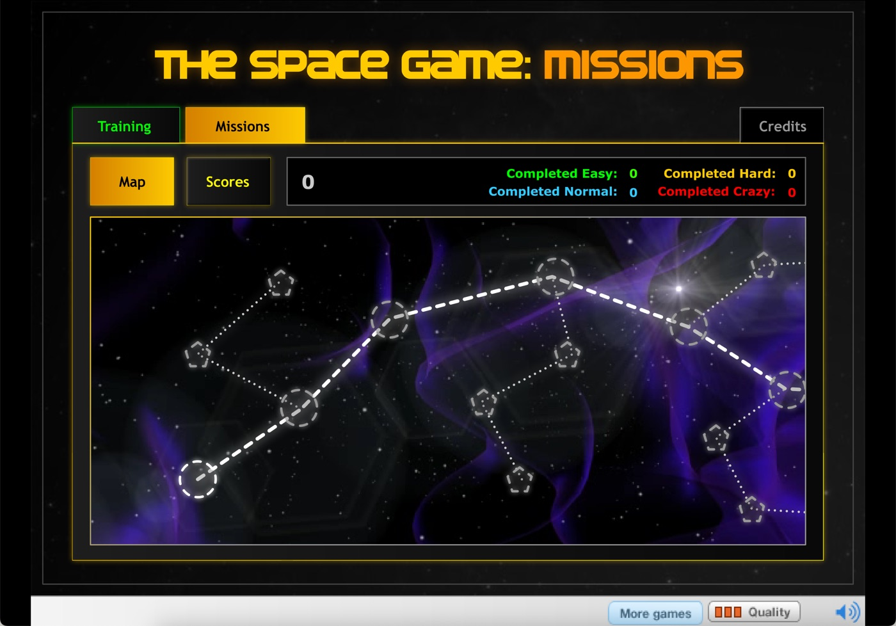

The Space Game: Launcher
Mine, expand, defend. The servers died in 2020; the game didn't have to.
The Space Game
The original. Training, missions, mining modes, survival modes and the bonus modes. Version 1.07, 25th Feb 2009.
The Space Game: Missions
The 2009 follow-up. An eight-mission campaign with Easy 1x, Normal 1.5x, Hard 2x and Crazy 3x multipliers, the EMP, the Super Miner and warp jumps.
Things all you space virgins should know
This page contains no game files. The games belong to their makers, and the copies that survive are in the archives below. Fetch them, drop them on this page, play.
1. Download the two Flashpoint data packs
Flashpoint Archive curated both games. Their data packs are plain zips of the original hosts' directory trees. These links are the same ones the Flashpoint launcher itself uses.
| The Space Game | 944ea5a3-…-1631483058057.zip 4.8 MB |
|---|---|
| sha256 80790aab1c8da74fa7d2202fc9a788e23e7480a7c41933ff5140c9f8534dd5ab | |
| The Space Game: Missions | 3f7c5f17-…-1631483066872.zip 3.4 MB |
| sha256 937d1e37774f82a1968f122e21d715e78988eac8579902cffb2c185da12b36b2 |
If those links ever go, the same files exist elsewhere: the loader on archive.org, and the game and widget on the Wayback Machine under storage.cloud.casualcollective.com/zones/pub/10/. Missions only survives in Flashpoint.
2. Drop them here
The page unzips them in your browser, converts each SWF to the uncompressed form the wrapper needs, and keeps them in this browser's storage. Both games share the same wrapper, so the two zips overlap; that is fine.
Every file is in. Both games are ready to launch.
The Space Game Checking…
The Space Game: Missions Checking…
The files stay in this browser until you . Saved progress is kept separately and survives that.
3. Play
Head back to Play and hit Launch. The games save their progress the way they did in 2009, into your browser instead of Casual Collective's database.
Saved progress
The games save the way they did in 2009, by posting a line of player data to the server. Here that line lands in this browser, separate from the game files, so it survives clearing them and can be cleared on its own.
Or run it locally
Clone the repo, unzip the packs, and put the SWFs under storage/ keeping their paths, so you end up with storage/games/thespacegame.swf, storage/zones/pub/10/widget.swf and so on. Then serve the folder with any static server and open it. Service workers don't run from file://, so a double-click on index.html won't do.
git clone https://github.com/br3nt/the-space-game-launcher
cd the-space-game-launcher
python3 -m http.server 8000 # or: npx serve -l 8000
open http://localhost:8000 # deno run -A jsr:@std/http/file-server -p 8000
# ruby -run -e httpd . -p 8000
# php -S localhost:8000
Mine your way into the dead server
If you have tried to play The Space Game from archive.org, from Kongregate, or from a saved SWF in Ruffle, you will have seen this:
Those sites are not running the game. They are running a 16 KB loader. Casual Collective never shipped their games as one file. The loader asks a server where the wrapper is, the wrapper asks for a config, the config names the real game, and all of it comes from Casual Collective's own servers. When the loader starts, this is what happens:
- Loader POST
widget.casualcollective.com/load
Gets backw1, the URL of the "widget" wrapper SWF, andw2, the API base. - Widget POST
…/pub/session/setup?gid=10
Gets JSON: player class, saved data, andswfs.base + swfs.game + ".v" + gamev + ".swf", the real game's URL. - Widget loads the intro stinger, the splash, then the 1.9 MB game.
- Handshake. The game sets
hss = random(9999999). The widget callsgame.CCHandshake((hss/11 - int(hss/11)) + hss % 11). Only on success does it callgame.CCSetup()and hand over the score/save API. Without it the game sits on a white screen forever.
The servers answering those calls were switched off in early December 2020, a few weeks before Adobe retired Flash. A Desktop Tower Defense player logged the plug being pulled on the Defold forum. The Wayback Machine's last working capture of widget.casualcollective.com/load is from January 2020, and by January 2021 the hostname redirected to KIXEYE, the company Casual Collective became. Step 1 fails, and the loader prints the message above.
That is why the game no longer works. Not Flash: the server.
What this page does
This page launches the game by answering the requests described above itself. A service worker intercepts the requests to the two Casual Collective hostnames the game talks to and answers them itself: the loader's one-line config, the setup JSON (with player class 2, a member, so the members-only content is on), result=1 for the score and level pings, and the save data round trip. The SWFs come from your browser's storage. The loader, wrapper and games run unmodified, as they shipped in 2009 (only stored uncompressed, see below), in Ruffle.
It was a bit of a journey getting the games to run. The wrapper's preloader only proceeds when Ruffle reports every byte loaded, which needs the child SWFs stored uncompressed, and a background browser tab throttles Ruffle to a crawl, which looks like a hang. That is why the launcher pauses the game while its tab is in the background and resumes it when you come back, the way Steam does. The full story is in the blog post.










Credits
- The Space Game and The Space Game: Missions
- David Scott and The Casual Collective, 2009. Audio by Somatone. The games are theirs; this page only replaces the servers.
- Preservation
- Flashpoint Archive, whose data packs hold the only known copy of Missions and whose reconstructed
setup.phpconfirmed the config format. The Wayback Machine and archive.org for the loader, widget and game. - Flash without Flash
- Ruffle, the Flash Player emulator, and JPEXS Free Flash Decompiler, which made the obfuscated wrapper readable.
- This launcher
- Brent Jacobs, with Claude (Anthropic's Fable 5.1) doing the digging, in one evening in September 2026. Source on GitHub, MIT licensed. Read how it went.